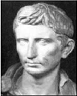
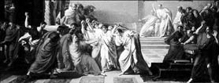

Julius Caesar (Sezar)
Julius Caesar (Sezar, MÖ 100-44)
Roma İmparatorluğu’nun ve döneminin en başarılı komutan ve devlet adamıdır. “Roma’da ikinci adam olmaktansa bir köyde birinci adam olmayı tercih ederim!” sözü onun lider ve tutku dolu kişiliğini yansıtır.
Gaius Julius Caesar, askerlerini iyi yöneten ve onlarla aynı şartları paylaşarak ordusunun kalbinde de yer etmeyi başaran bir komutandı. İngiltere’ye çıktığında askerlerinin geri dönüş umudunu yok etmek için kıyıdaki gemilerin tamamının yakılması emrini verir. Böylece askerlerine İngiltere’yi almaktan başka çarelerinin kalmadığını gösterir.
Afrika sahillerine içinde Roma askerleriyle dolu yüzlerce kayık yanaşmıştı. Açık denize demirledikleri gemileriyle Afrika Kıtası’na bu ıssız ve sakin koydan girmeyi planlıyorlardı.
En öndeki kayık Sezar’a aitti. Tüm kayıklar sahile yanaşıp çevrenin güvenliğinden emin olduktan sonra Sezar kayığından tüm ihtişamıyla ayağa kalktı ve bu önemli an için askerlerine konuşma yapmak üzere kayıktan inmek istedi.
Fakat o an beklenmedik bir şey oldu. Sezar’ın ayağı kayığın bir köşesine takıldı ve Sezar binlerce askerin önünde yere kapaklandı. Büyük bir ordunun komutanı olarak askerlerinin gözünde küçük düşmeye hiç niyeti olmayan Sezar hemen sahilin kumlarına sarılarak,
”Ey Afrika! Sonunda sana sahip oldum ve asla bırakmaya niyetim yok!” diyerek kumları öpmeye başladı.
Sezar’ın, Mısır’ı aldıktan sonra Roma’da ünü oldukça artmıştı. Zafere doymak bilmiyordu. Anadolu’ya geçmiş ve karşısına çıkan Rum Pontus Devleti’ni de çok kısa bir sürede yenmişti.
Gelişmeleri merakla takip eden Roma’daki dostlarına,
kazandığı bu önemli zaferin çabukluğunu anlatmak için şu kısa mektubu yollamıştı:
“Veni... Vidi... Vici...” (“Geldim... Gördüm... Yendim...”)
Arka arkaya elde ettiği askeri başarılar Roma’da şöhretini artırınca, senatonun başında bulunan Pompeius’un iktidarı gölgelenmeye başlar. Roma iktidarındaki bu endişeler Sezar’ın geleceğini tehlikeye attığından o da askerleriyle Roma’ya yürüme kararı alır.
Pompeius’u yenerek ülkenin başına geçer ve imparatorluğunu ilan eder. Ancak senato üyeleri onun bu keyfi tavırlarını içine sindiremez. İçten içe örgütlenen muhalifler senatoda tuzak kurar ve üvey oğlu Brutus başta olmak üzere bıçak darbeleriyle Roma’nın bu büyük komutanını Pompeius heykelinin dibinde öldürürler. Ardı ardına bıçak darbeleriyle yere yığılan ünlü komutan düşmanlarının arasında çok güvendiği üvey oğlunu da görünce tarihe geçen şu ünlü sözü söyler:
“Et tu Brute?” (“Sen de mi Brutus?”)

Sezar suikastı, Ressam Michele Cammarano, 1798